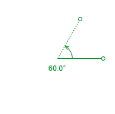
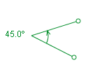
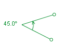
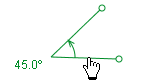

and choose Measuring Tools|Protractor from the popup menu. Multiple protractors can be created as needed.
and choose Measuring Tools|Protractor from the popup menu. Multiple protractors can be created as needed.
A protractor track is a tool for measuring angular arcs. It has a vertex, two arms, an arc arrow and an angle readout that displays either degrees or radians (see Setting angle units).
To create a protractor, click the Create button and choose Measuring Tools|Protractor from the popup menu. Multiple protractors can be created as needed.
Click and drag the vertex or circular end of either arm to adjust the arms. The arc arrow shows the direction (cw or ccw) of the arc and the angle readout and toolbar angle field display its value (positive if ccw, negative if cw).


Set the arc to a specific angle by clicking either the angle readout or toolbar field and entering the desired angle.

 

Drag the center of either arm to move the entire protractor without changing the angle or orientation.

Drag the arc arrow to rotate the entire protractor about its vertex without changing the angular arc. For finer control you can drag away from the vertex--a dashed line continues to connect the drag point to the arc arrow as shown.


By default, the protractor has a fixed position--that is, its vertex and arm positions are the same in all frames. Uncheck the Fixed Position checkbox in its track menu to allow these properties to vary independently from frame to frame.
It is often useful to measure the distances and angles between independent point mass tracks. This is accomplished most easily by creating a protractor and attaching its ends to the point masses. To attach the ends, choose the Attach Ends item in the protractor's track menu, then select the desired point mass tracks from the dropdown lists in the Attach Ends dialog. Attaching the ends automatically unfixes them.

Locking the protractor prevents it from making any changes to the scale. Lock the protractor by turning on the Locked property in its track menu.